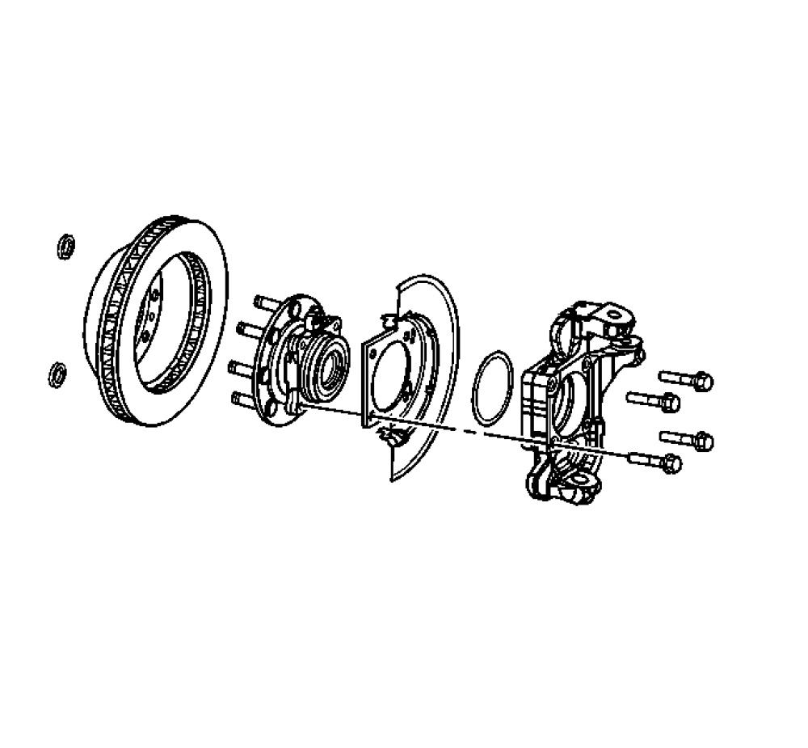

Wheel Hub, Bearing, and Seal Replacement (2500 Series)
Front Wheel Hub, Bearing, and Seal Replacement (2500)
Removal Procedure
Notice: Never place vehicle on the ground with the halfshaft removed or the halfshaft nut torqued improperly. Otherwise, bearing seals may become dislodged causing premature wear and/or damage to the hub and bearing assembly.
1. Raise and support the vehicle.
2. Remove the tire and wheel.
3. Remove the rotor. Refer to Front Brake Rotor Replacement Service and Repair.
4. Remove the wheel speed sensor and brake hose mounting bracket bolt from the steering knuckle.
5. Disconnect the electrical connection for the wheel speed sensor.
Important: Steps 6 thru 8 applies to those vehicles equipped with 4WD
6. Remove the wheel driveshaft nut retaining cover.
Notice: Wheel drive shaft boots, seals and clamps should be protected from sharp objects any time service is performed on or near the wheel drive shaft(s). Damage to the boot(s), the seal(s) or the clamp(s) may cause lubricant to leak from the joint and lead to increased noise and possible failure of the wheel drive shaft.
7. Wrap shop towel around the inner and outer wheel drive shaft booth.
8. Remove the wheel driveshaft assembly retaining nut and washer from the wheel driveshaft assembly. Refer to Wheel Drive Shaft Replacement Service and Repair.

9. Remove the wheel hub and bearing mounting bolts.
Important: The wheel hub and bearing comes with the speed sensor installed.
10. Remove the wheel hub and bearing and splash shield from the vehicle.
11. Remove the O-ring seal from the steering knuckle bore.
12. Remove the wheel speed sensor from the wheel hub and bearing.
13. Clean and inspect the O-ring seal.
14. Replace the seal if the following conditions exist:
- Nicks
- Cuts
- Dry or brittle
- Compression set
Installation Procedure
1. Clean all corrosion or contaminates from the steering knuckle bore and the hub and bearing assembly.
2. Lubricate the steering knuckle bore with wheel bearing grease or the equivalent.
3. Install the O-ring to the steering knuckle.
Notice: Use the correct fastener in the correct location. Replacement fasteners must be the correct part number for that application. Fasteners requiring replacement or fasteners requiring the use of thread locking compound or sealant are identified in the service procedure. Do not use paints, lubricants, or corrosion inhibitors on fasteners or fastener joint surfaces unless specified. These coatings affect fastener torque and joint clamping force and may damage the fastener. Use the correct tightening sequence and specifications when installing fasteners in order to avoid damage to parts and systems.
4. Install the wheel speed sensor to the wheel hub and bearing.
Tighten
Tighten the sensor mounting bolt to 18 Nm (13 lb ft).
5. Install the wheel hub and bearing and splash shield to the vehicle.
6. Install the wheel hub and bearing mounting bolts.
Tighten
Tighten the wheel hub to knuckle bolts to 180 Nm (133 lb ft).
Important: The following service procedure applies to those vehicles equipped with 4WD.
7. Install the nut and washer retaining the wheel drive shaft assembly to the wheel hub and bearing. Refer to Wheel Drive Shaft Replacement Service and Repair.
8. Connect the electrical connection for the wheel speed sensor.
9. Install the wheel speed sensor and brake hose mounting bracket bolt to the steering knuckle.
Tighten
Tighten the bolt to 12 Nm (106 lb in).
10. Install the rotor. Refer to Front Brake Rotor Replacement Service and Repair.
11. Install the tire and wheel. Refer to Tire and Wheel Removal and Installation .
12. Lower the vehicle .